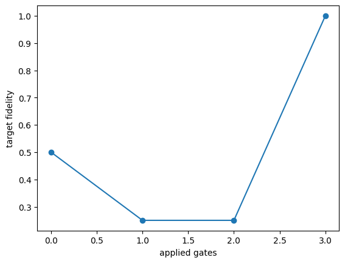

Code
import itertools, time, json
from pathlib import Path
import numpy as np
import matplotlib.pyplot as plt
started=time.perf_counter()
OUT=Path('classroom_results'); OUT.mkdir(exist_ok=True)
H=np.array([[1,1],[1,-1]])/np.sqrt(2)
eye=np.eye(8); H0=np.kron(H,np.eye(4))
def cx(control,target):
U=np.zeros((8,8))
for k in range(8):
j=k ^ (1 << (2-target)) if k & (1 << (2-control)) else k
U[j,k]=1
return U
GATES=np.array([H0,cx(0,1),cx(1,2)])
NAMES=['H0','CX01','CX12']
psi0=eye[:,0]; target=(eye[:,0]+eye[:,-1])/np.sqrt(2)
GAMMA,COST,BUDGET=0.95,0.01,6
def fidelity(psi): return float(abs(target.conj()@psi)**2)
def key(psi):
k=np.flatnonzero(abs(psi)>1e-10)[0]
psi=psi*np.sign(psi[k])
return tuple(np.round(psi,10))
states=[psi0]; lookup={key(psi0):0}; i=0
while i<len(states):
for U in GATES:
psi=U@states[i]; k=key(psi)
if k not in lookup: lookup[k]=len(states); states.append(psi)
i+=1
STATES=np.array(states); S=len(states)
NEXT=np.array([[lookup[key(U@psi)] for U in GATES] for psi in STATES])
FID=np.array([fidelity(psi) for psi in STATES])
REWARD=FID[NEXT]-FID[:,None]-COST
SUCCESS=FID>0.99
assert all(np.allclose(U.T@U,np.eye(8)) for U in GATES)
print('Reachable physical states:',S,'; Q-table rows include remaining budget')
psi=psi0.copy(); fids=[fidelity(psi)]
for U in GATES: psi=U@psi; fids.append(fidelity(psi))
print('Reference fidelity history:',np.round(fids,4))
assert np.isclose(fids[-1],1)
plt.plot(range(4),fids,'o-');plt.xlabel('applied gates');plt.ylabel('target fidelity');plt.show()Reachable physical states: 64 ; Q-table rows include remaining budget
Reference fidelity history: [0.5 0.25 0.25 1. ]